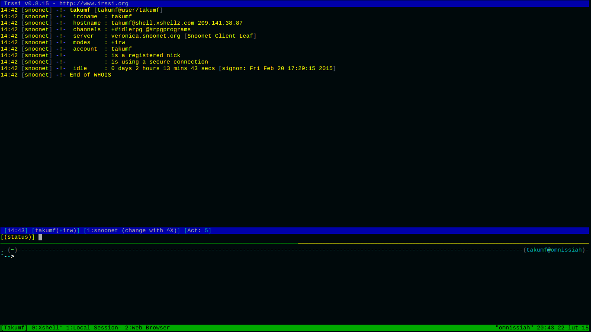
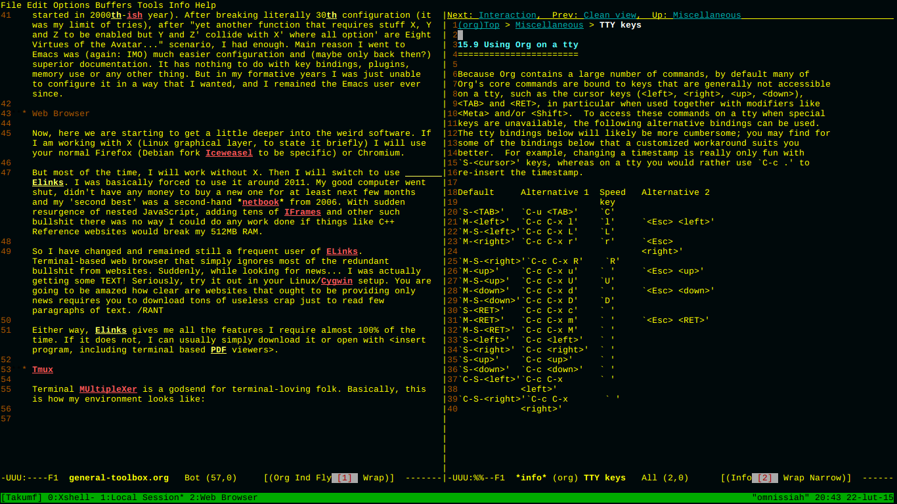
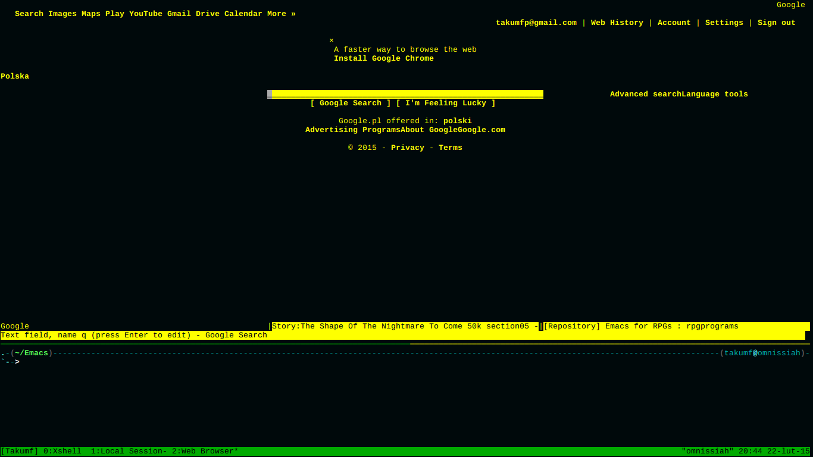

This is bit less about the topic, but some points and personal recommendations that I am considering as a quite beneficial tool set. Fair word of warning, it is not going to look pretty. If anything, my style of computer use takes a bit too much from my professors.
It will get slightly expanded and as time allows and there is any interest, I will help with making similar setups.
I want to make it as clear as possible: all of that is from my own view, experience and opinions. It does not invalidate anything and is not intended as such. I am making it to show some fairly unknown software. Or more precisely: mostly known to people immersed in Linux terminal works.
Now, I know that this is basically a one major flame war to come, but this is just personal preference: I am a Linux user. Just as I think that everyone should at least try one other OS, I would love to know that more Windows users gave Linux a solid try. Same goes toward Linux users actually being fair while trying out Windows.
I am currently working on Debian 8 and Windows 7 Ultimate as a dual-boot.
Inside Linux there are tons of small utility programs that, when getting accustomed to, provide one of the best tool sets out there. Both for GMs and anyone else.
| Program name | Description |
| bc, dc | Inline calculator, dc provides arbitrary precision |
| units | Unit converter. If it can be converted, it probably knows how |
| sort | Sorts input text files with one of the available rules |
| shuf | Shuffle text file |
| diff/wdiff | Find differences between files. |
| shell | This is unfair 'utility' but a programming language |
| fmt | Automatic text formatter |
| uniq | Find unique lines (remove all duplicates) of input |
| grep | Find any text-pattern |
| sed | Stream Editor. Change formatting for other programs or uses |
| awk | Pattern scanning language. Find, separate or change text that matches |
| pdfto* | PDF to HTML, Text, PPM and likely some other formats |
Basically, it takes a lot of time to master them all, but only about three months to become proficient user who connects them all onto one 'program' in form of a shell script (or execute from command line).
How can it be used by anyone into role playing games? Simple: imagine you have downloaded your handbooks and despite great contents… you can't find most small rules. Either table of contents are not as well detailed, index is one page that consists of 5 definitions that were already given in prelude. I would guess you have stumbled upon such problems at least once, or know people who have it consistently. Above tools will allow you to extract, format and apply syntax to PDF rules and will give you neat and light .html or plain text files in a way you personally see fit.
It might seem like a fringe case, but it saved me untold amounts of time with Vampire: the Masquerade books, Warhammer and a lot of other systems or books in general.
If you are here, you are already fully aware of my answer. In my case, it is going to be Emacs. I have to say one reservation before going anywhere else: only reason I am not using VIM was the massive amount of frustration caused by IMO badly given tutorials and configuration documentation details (and I started in 2000th-ish year). After breaking literally 30th configuration (it was my limit of tries), after "yet another function that requires stuff X, Y and Z to be enabled but Y and Z' collide with X' where all option' are Eight Virtues of the Avatar…" scenario, I had enough. Main reason I went to Emacs was (again: IMO) much easier configuration and (maybe only back then?) superior documentation. It has nothing to do with key bindings, plugins, memory use or any other thing. But in my formative years I was just unable to configure it in a way that I wanted, and I remained the Emacs user ever since.
Now, here we are starting to get a little deeper into the weird software. If I am working with X (Linux graphical layer, to state it briefly) I will use your normal Firefox (Debian fork Iceweasel to be specific) or Chromium.
But most of the time, I will work without X. Then I will switch to use Elinks. I was basically forced to use it around 2011. My good computer went shut, didn't have any money to buy a new one for at least next few months and my 'second best' was a second-hand netbook from 2006. With sudden resurgence of nested JavaScript, adding tens of IFrames and other such bullshit there was no way I could do any work done if things like C++ Reference websites would break my 512MB RAM.
So I have changed and remained still a frequent user of ELinks. Terminal-based web browser that simply ignores most of the redundant bullshit from websites. Suddenly, while looking for news… I was actually getting some TEXT! Seriously, try it out in your Linux/Cygwin setup. You are going to be amazed how clear are websites that ought to be providing only news requires you to download tons of useless crap just to read few paragraphs of text. /RANT
Either way, Elinks gives me all the features I require almost 100% of the time. If it does not, I can usually simply download it or open with <insert program, including terminal based PDF viewers>. Minimal resource requirements and fairly large portion on functionality made it into my browser of choice, even now despite 8GB of memory and decent CPU.
Mutt or the one in the browser. Terminal based Mutt is mostly for my university email, since I actually should have it checked in real time :P.
Terminal MUltipleXer is a godsend for terminal-loving folk. Basically, this is how my environment looks like:

Figure 1: This is how my IRC client looks, below it is a smaller shell for my own stuff on my local computer.

Figure 2: Here is my Emacs session, open basically in exactly this place before I made the screens.

Figure 3: Actual web browser! ELinks with google, 1d4chan and /r/rpgprograms tabs. As of the Chrome remark: hardly!
Basically, great way to have all of the stuff just fingertips.
In case this would be your concern, depends. This is how I work day in and day out for past dew years.
As far as pure benefits go, here they are:
I hope there are no GMs who are actually worried about players looking into their notes, but if it is the case: you can encrypt and decrypt your notes without any hassle. Not to mention the fact that in all probability your players are going to be flabbergasted by command line interface alone.